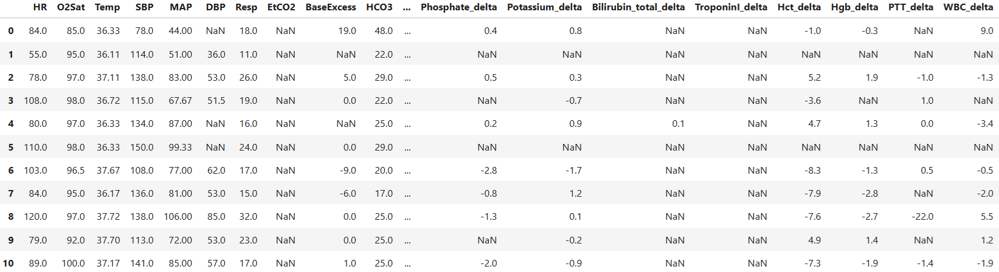
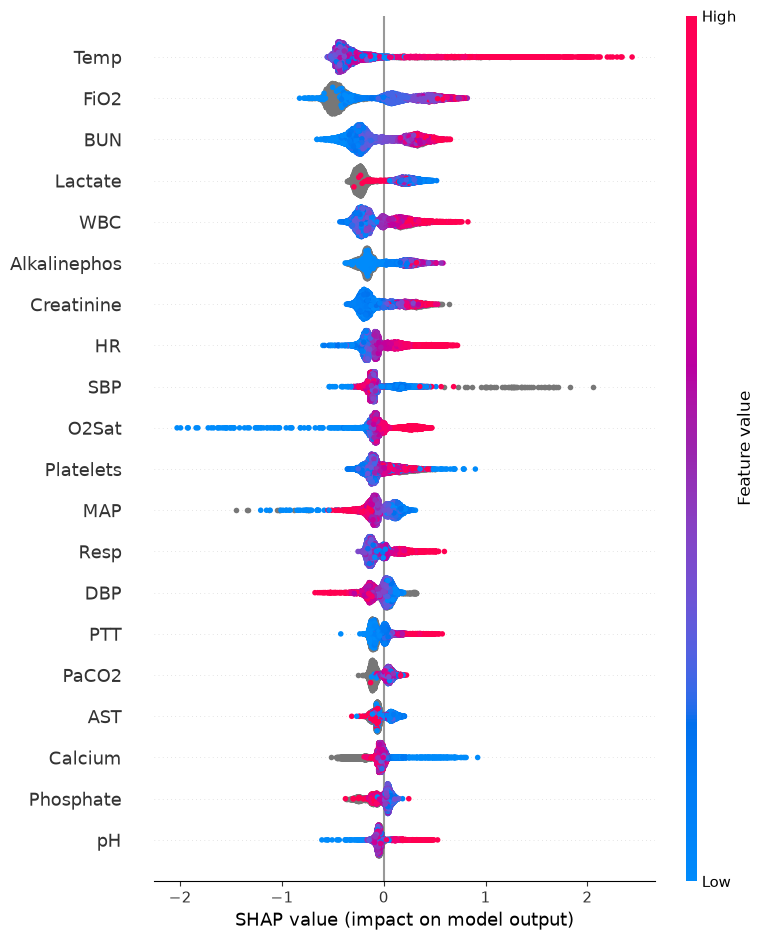
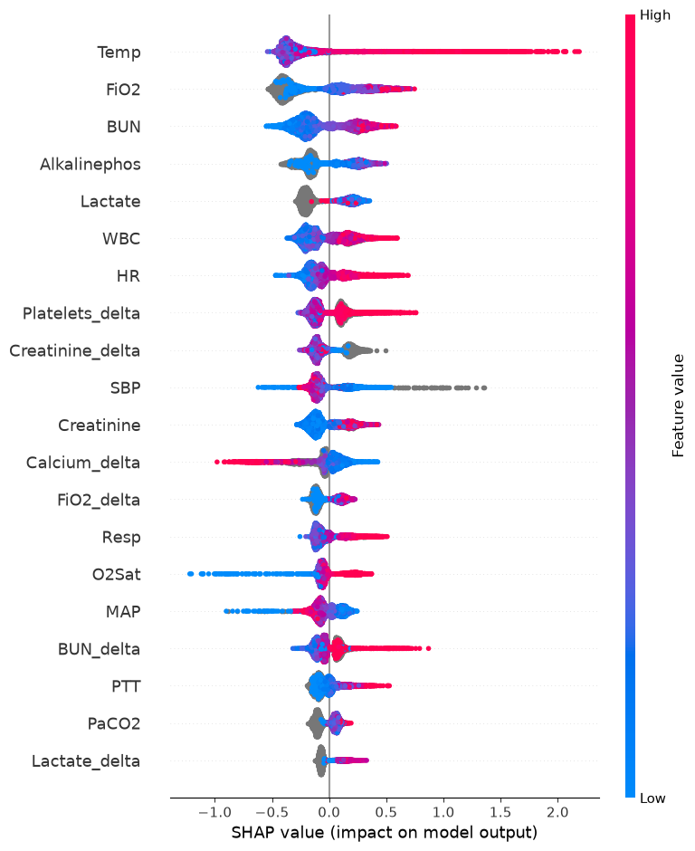

This project is contained in 'sepsis_deltas.ipynb'.
Dataset
For this project, we use the data from the 2019 PhysioNet Challenge. The dataset contains real patient data from two separate hospital systems. We use this version that has been uploaded to Kaggle and preprocessed into a single .csv file.
In the previous project, we used a synthetic sepsis prediction dataset that had one row of data per patient, or one measurement per feature. This dataset contains time series measurements over the course of each patient's ICU stay (many which are missing). The data is structured as follows:
RangeIndex: 40336 entries, 0 to 40335
Data columns (total 44 columns):
# Column Non-Null Count Dtype
--- ------ -------------- -----
0 Patient_ID 40336 non-null int64
1 Unnamed: 0 40336 non-null float64
2 Hour 40336 non-null float64
3 HR 40331 non-null float64
4 O2Sat 40318 non-null float64
5 Temp 40052 non-null float64
6 SBP 40054 non-null float64
7 MAP 40232 non-null float64
8 DBP 32925 non-null float64
9 Resp 40265 non-null float64
10 EtCO2 3216 non-null float64
11 BaseExcess 13210 non-null float64
12 HCO3 20217 non-null float64
13 FiO2 17809 non-null float64
14 pH 18935 non-null float64
15 PaCO2 18356 non-null float64
16 SaO2 13088 non-null float64
17 AST 14357 non-null float64
18 BUN 38318 non-null float64
19 Alkalinephos 14173 non-null float64
20 Calcium 34997 non-null float64
21 Chloride 21411 non-null float64
22 Creatinine 38287 non-null float64
23 Bilirubin_direct 2057 non-null float64
24 Glucose 38756 non-null float64
25 Lactate 12493 non-null float64
26 Magnesium 35405 non-null float64
27 Phosphate 28321 non-null float64
28 Potassium 38469 non-null float64
29 Bilirubin_total 14248 non-null float64
30 TroponinI 7053 non-null float64
31 Hct 38019 non-null float64
32 Hgb 37888 non-null float64
33 PTT 20238 non-null float64
34 WBC 37711 non-null float64
35 Fibrinogen 4515 non-null float64
36 Platelets 37759 non-null float64
37 Age 40336 non-null float64
38 Gender 40336 non-null float64
39 Unit1 24719 non-null float64
40 Unit2 24719 non-null float64
41 HospAdmTime 40335 non-null float64
42 ICULOS 40336 non-null float64
43 SepsisLabel 40336 non-null int64
The time of each measurement is indicated by column titled 'Hour', which is the time in hours from admittance to the ICU.
Baseline Model with Hyperparameter Search
Let's first run train and test a default XGBoost model on this data. Our previous project used a dataset with only one row per patient, so let's start with that as our baseline. We will use the last non-missing measurement for each test, which is the most recent measurement.
As before, we remove columns not needed for prediction: ['Unnamed: 0', 'Hour', 'Unit1', 'Unit2', 'HospAdmTime', 'Patient_ID', 'ICULOS'].
This time, we implement a simple grid search around the hyperparameter values we manually found last time:
param_grid = {
'max_depth': [4, 5, 6],
'learning_rate': [0.01, 0.03, 0.05],
'n_estimators': [150, 200, 300],
'subsample': [0.6, 0.8],
'colsample_bytree': [0.6, 0.8]
}
We set up the grid search to optimize average precision, or PR-AUC. As before, we use a scaled weight to address class imbalance and adjust the decision threshold to balance precision and recall.
Our results are already better on this real dataset than on the synthetic dataset. Using a decision threshold of ~0.69, we get an ROC-AUC of 0.8674 and a PR-AUC of 0.4212. Our sepsis precision is 0.41 and recall is 0.51, with an f1-score of 0.46. Non-sepsis precision is 0.96 and recall is 0.94. The results are below:
Optimal Threshold: 0.69347
ROC-AUC: 0.8674
PR-AUC: 0.4212
--- Tuned Classification Report ---
precision recall f1-score support
0 0.96 0.94 0.95 7482
1 0.41 0.51 0.46 586
accuracy 0.91 8068
macro avg 0.69 0.73 0.71 8068
weighted avg 0.92 0.91 0.92 8068
Feature Engineering
To see if we can improve our predictions, let's add a velocity feature for columns where at least two measurements were taken. This quantifies the change in a lab result over the course of the ICU stay.
To do this, we'll duplicate the feature columns we used before (excluding age and gender), then take the difference between the last measurement and the first measurement. We append '_delta' to the column header (so the change in heart rate would be the 'HR_delta' column) and join these extra columns to the original collapsed dataset. If there were less than 2 measurements taken, we fill the _delta column with NaN. After joining the delta columns to the original "last measurement" columns, we now have 70 feature columns, and one label column.
Here is a preview of the first 10 rows of the new dataset:

We train the XGBoost classifer again using a hyperparameter search, and we improve our results to 0.50 precision and 0.52 recall for sepsis. The classification report is below:
Optimal Threshold: 0.70346
ROC-AUC: 0.8875
PR-AUC: 0.4969
--- Tuned Classification Report ---
precision recall f1-score support
0 0.96 0.96 0.96 7482
1 0.50 0.52 0.51 586
accuracy 0.93 8068
macro avg 0.73 0.74 0.74 8068
weighted avg 0.93 0.93 0.93 8068
Sepsis precision increased from 0.41 to 0.50, and recall increased one percentage point from 0.51 to 0.52.
Now let's run SHAP summary plots to see which features are most important for the model. The first plot shows the top 20 features without the delta features, and the second plot shows the top 20 features with the delta features. We can see that the top features stay somewhat the same, but some of the delta features make a difference, enough to significantly increase precision.


Note that the large percentage of missing values (represented by gray dots) may skew the impact direction on the chart.
Conclusion
Adding temporal trend features (_delta) improved sepsis prediction. PR-AUC improved from 0.4212 to 0.4969. Precision increased from 0.41 to 0.50, meaning 1 in every 2 alarms is a true sepsis case. Compared to the 3% alarm system from the previous project, this cuts false alarms down dramatically. Often, pushing precision up forces recall down, but here it holds steady.